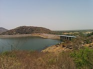

Welcome To Banaskatha...

Banas River
Banaskantha district is one of the thirty-three districts of the Gujarat state of India. The administrative headquarters of the district is at Palanpur which is also its largest city. The district is located in the Northeast of Gujarat and is presumably named after the West Banas River which runs through the valley between Mount Abu and Aravalli Range, flowing to the plains of Gujarat in this region and towards the Rann of Kutch.[2] The district is famous for the Ambaji temple which draws many tourists.[3] It covers an area of 12703 km2 and is the second largest district in the state.
Banaskantha shares its borders with Rajasthan state in the North, Sabarkantha district in East, Kutch district in West and Patan district and Mehsana district in the South.
Famous Places in Banaskatha City
- Kumbhariya
- Mangalya Van
- Shri Arasuri Ambaji Devasthan
- Balram Palace Resort
- Kedarnath Mahadev Temple
Banaskatha City Famous Food Item
- Puri Bhaji
- Special Dal bhaji
- Vada samosa
- Pizza
© Copyright Reserved
Go To Main Page